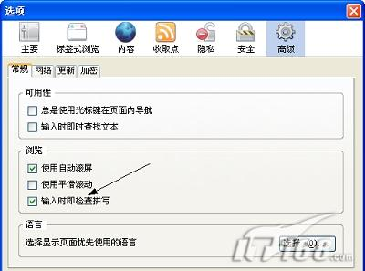

例如: 扩展, 兼容性, QQ空间
江湖独酌
声望: 1
2011-03-14
在新版火狐新手上路，使用技巧中提到Firefox 内建的拼写检查工具，但不知在哪里能下载此插件？谢谢。
0 0
ben
声望: 11
要启用这一功能，需要在firefox设置中打开此功能（如图），并在Mozilla官方网站上下载相应语种的字典和语言包。下载地址为https://addons.mozilla.org/zh-CN/firefox/browse/type:3 
1 0
ahao
声望: 16
“工具”-“附加组件”-“获取附加组件”，在搜索框中输入“British English Dictionary”，找到后，添加至firefox即可。
firefox× 76
拼写检查× 2
火狐后台打开网页
中文版是否有拼写检查的功能
关于DIY浏览器下载问题
刚升级Firefox5，“火狐主页”扩展不显示主页！
Firefox 5 Beta简体中文版能在windows xp sp3操作系统上试用吗？请指教。
关于火狐内置浏览进程恢复特性消失的问题
火狐中国版里的“quick dial”插件，在哪里可以下载？
火狐自带的下载器，下载的文件存在哪里？
很多链接都打不开，是空白页
关于4.0的网页翻译插件 在哪下载？
火狐浏览器提供给您更快、更安全、更个性化的全新上网体验！
免费下载 火狐浏览器